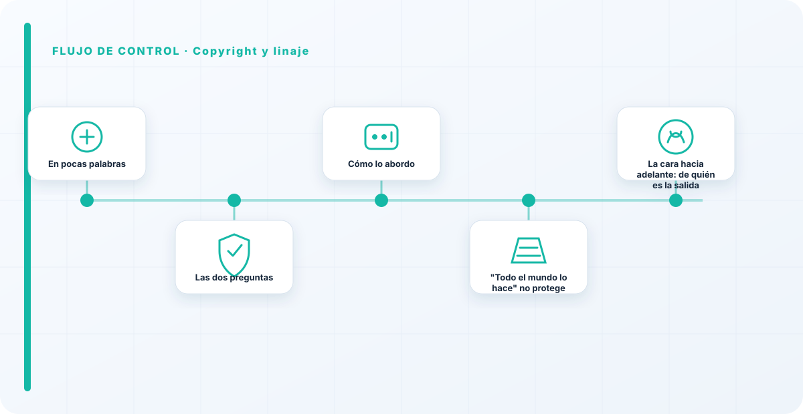
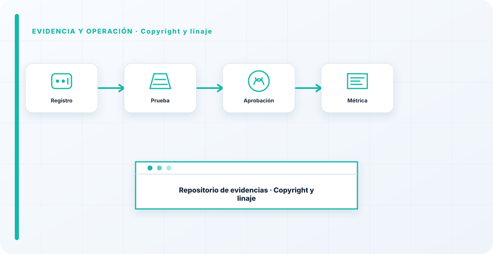

En pocas palabras
Hay dos preguntas legales que la prisa por usar IA se salta alegremente: ¿tenías derecho a los datos con los que se entrenó?, y ¿de quién es la propiedad intelectual de lo que el modelo genera? El copyright es hoy uno de los frentes más calientes y menos resueltos de la IA, y el linaje —saber de dónde viene cada dato— es lo que te permite responder a ambas en lugar de cruzar los dedos.
Las dos preguntas
Una mira hacia atrás: con qué derecho se usaron los datos de entrenamiento, el frente legal más candente ahora mismo, con litigios abiertos sobre datos usados sin permiso. La otra mira hacia adelante: de quién es la propiedad intelectual de lo que el modelo produce, y qué responsabilidad tienes si su salida se parece demasiado a algo protegido.
El linaje —la trazabilidad de qué dato entró y de dónde vino— es lo que te permite responder a las dos. Sin él, ambas preguntas se contestan con un "no lo sé" que no sostiene ni un contrato ni un juicio.
Cómo lo abordo
Con trazabilidad del dato y criterio legal, no técnico. Registro el origen y los derechos en el linaje de datasets y trato el copyright como un riesgo a gestionar —con dueño y plan—, no como algo que se ignora hasta que llega una carta.
No soy abogado, y este terreno se mueve rápido, así que aquí lo que aporto es asegurar que la organización sepa de dónde viene su dato, para que su asesoría legal pueda pronunciarse sobre algo concreto en vez de sobre una nebulosa.

"Todo el mundo lo hace" no protege
El argumento que más oigo para no preocuparse por el copyright es "todo el mundo lo hace". No es una defensa legal, es una forma de posponer el problema en grupo. La única manera de dormir tranquilo es saber de dónde viene tu dato y con qué derecho lo usas, y asumir que este terreno legal está en plena definición.
Ignorarlo no hace desaparecer el riesgo; solo lo aplaza y lo hace más caro cuando llega. El linaje es lo que convierte "esperemos que no pase nada" en "sabemos exactamente qué usamos y podemos defenderlo".
La cara hacia adelante: de quién es la salida
El copyright de la IA tiene una segunda mitad que preocupa menos y debería preocupar igual: no solo con qué derecho entró el dato, sino de quién es lo que el modelo produce. ¿Puedes reclamar la propiedad de lo que genera tu IA? ¿Qué responsabilidad asumes si una salida se parece demasiado a una obra protegida? Son preguntas sin respuesta cerrada todavía, y por eso conviene tenerlas presentes en vez de descubrirlas por sorpresa.
Mi enfoque práctico es tratar las salidas del modelo con la misma cautela que cualquier contenido cuyo origen no controlas del todo: revisión donde el riesgo es alto, y no asumir automáticamente que lo generado es tuyo y libre de cargas. El linaje ayuda también aquí, porque saber de qué aprendió el modelo orienta cuánto vigilar lo que produce.
El copyright en IA es un campo minado que mucha gente cruza con los ojos cerrados porque "todo el mundo lo hace". No es una defensa. La única forma de dormir tranquilo es saber de dónde viene tu dato y con qué derecho lo usas —el linaje— y asumir que este terreno legal se está moviendo rápido. Ignorarlo no lo hace desaparecer, solo pospone la factura.
Los errores que veo una y otra vez
- Usar datos sin comprobar derechos.
- No poder trazar el origen del dato.
- Ignorar la propiedad de las salidas del modelo.
- Asumir que "todos lo hacen" protege.
- No tratar el copyright como riesgo gestionable.
Cómo lo llevaría a un entorno real
Cuando aterrizo copyright y linaje en una organización, no empiezo por comprar una herramienta ni por redactar veinte páginas. Empiezo por dibujar qué ocurre hoy: quién solicita el cambio, quién lo aprueba, qué sistemas intervienen, qué datos cruzan el proceso y quién se entera cuando algo falla. Ese dibujo suele descubrir más problemas que cualquier checklist. En gobierno del dato, lo peligroso no es solo carecer de controles; también lo es creer que existen porque alguien los escribió una vez.
Después separo lo imprescindible de lo deseable. Lo imprescindible debe poder comprobarse: un responsable identificado, una regla clara, una evidencia fechada y un mecanismo para reaccionar. En este caso revisaría especialmente Copyright, linaje y responsable. No me vale una respuesta del tipo «lo gestiona el proveedor» o «eso lo mira seguridad». Necesito saber qué persona toma la decisión, con qué información y dentro de qué plazo.
La implantación debe crecer con el riesgo. Un piloto interno puede funcionar con una ficha breve y una revisión manual. Un sistema que afecta a clientes, empleados, dinero o información sensible necesita segregación de funciones, pruebas independientes, monitorización y un expediente mantenido. Mi criterio es sencillo: cuanto más difícil sea deshacer el daño, más fuerte debe ser la barrera antes de producción.
Decisiones que deben quedar por escrito
Hay decisiones que no deberían vivir en una reunión ni en un mensaje de chat. Para copyright y linaje dejaría documentados el alcance, los supuestos, los límites de uso, las excepciones aceptadas y las condiciones que obligan a detener o reevaluar. El documento no tiene que ser enorme, pero sí debe permitir que otra persona entienda por qué se hizo lo que se hizo.
También registraría quién puede cambiar control, quién valida evidencia y quién recibe las alertas relacionadas con Copyright. Cuando esas tres responsabilidades se mezclan, aparece el clásico problema: el mismo equipo construye, aprueba y declara que todo funciona. No siempre se puede separar por completo, sobre todo en organizaciones pequeñas, pero al menos debe existir una revisión por alguien que no dependa del éxito inmediato del despliegue.
Las excepciones merecen un tratamiento propio. Una excepción sin fecha de caducidad acaba convirtiéndose en la arquitectura real. Por eso exigiría motivo, riesgo aceptado, responsable, compensaciones, fecha de revisión y criterio de cierre. Si falta uno de esos elementos, no es una excepción gestionada; es una deuda invisible.

Un ejemplo práctico
Imaginemos que un equipo quiere incorporar copyright y linaje a un servicio que ya está en producción. La propuesta promete reducir tiempos y automatizar tareas, pero utiliza componentes que cambian con frecuencia. Antes de aprobarlo, pediría una prueba limitada, un inventario de dependencias, un flujo de datos y una definición clara de qué acciones quedan fuera del alcance.
Durante la prueba recogería resultados normales y casos límite. No solo miraría si funciona; comprobaría qué ocurre cuando faltan datos, cambia una versión, se pierde conectividad, llega una entrada manipulada o un usuario intenta superar sus permisos. Ahí es donde se ve si el diseño aguanta. En muchas pruebas felices todo parece seguro porque nadie ha intentado romper la hipótesis de partida.
Si los resultados son aceptables, la salida a producción tendría condiciones: versión fijada, configuración aprobada, logs disponibles, responsables de guardia, procedimiento de rollback y revisión tras las primeras semanas. Si alguno de esos elementos no existe, prefiero retrasar el despliegue. Un día de demora suele ser más barato que investigar después un comportamiento que nadie puede reconstruir.
Qué evidencias guardaría
Para demostrar que el control funciona conservaría evidencias que cuenten una historia completa, no capturas sueltas. La historia debe enlazar necesidad, decisión, implementación, prueba y operación. En copyright y linaje eso incluye como mínimo la ficha del activo, el diagrama vigente, la configuración aprobada, el resultado de las pruebas y el registro de cambios.
No guardaría información por acumular. Si los logs contienen prompts, documentos, datos personales o secretos, aplicaría minimización, control de acceso y retención. La evidencia debe ayudar a investigar y auditar sin crear una segunda fuga de información. Es frecuente endurecer el sistema principal y dejar un repositorio de evidencias abierto a demasiadas personas.
- Propietario y finalidad de copyright y linaje, con fecha de revisión.
- Inventario de Copyright, linaje y dependencias asociadas.
- Criterios de aceptación y resultados sobre responsable y control.
- Configuración efectiva, versión y aprobación del cambio.
- Alertas, incidentes, excepciones y acciones correctivas cerradas.
Señales de que el control no está funcionando
El primer síntoma es que nadie sabe responder con rapidez quién es el responsable. El segundo es que la documentación describe una versión distinta de la que está operando. El tercero es que las alertas existen, pero llegan a un buzón que nadie revisa. Cuando aparecen esos tres síntomas, el problema no es tecnológico: el control se ha desconectado de la operación.
También desconfío de las métricas demasiado perfectas. Cero incidentes, cero excepciones y cien por cien de cumplimiento pueden significar excelencia, pero con frecuencia significan que no estamos mirando. Prefiero indicadores que enseñen tendencia: tiempo de corrección, antigüedad de excepciones, cobertura de pruebas, cambios sin revisión y reincidencias.
Por último, revisaría el comportamiento después de cada cambio significativo. En IA, una actualización de modelo, dataset, prompt, herramienta, permiso o proveedor puede alterar el riesgo sin cambiar el nombre del servicio. Si el proceso solo reevalúa cuando se crea un proyecto nuevo, se quedará ciego durante la mayor parte de la vida útil.
Mi criterio de cierre
Considero que copyright y linaje está razonablemente controlado cuando el equipo puede explicar el proceso sin depender de una sola persona, reconstruir una decisión con evidencias y detener el servicio sin improvisar. No busco perfección documental; busco que la organización pueda tomar decisiones repetibles bajo presión.
El cierre no consiste en marcar todas las casillas. Consiste en demostrar que los riesgos relevantes tienen propietario, que los controles se prueban y que las desviaciones producen una acción. Si la evidencia no cambia ninguna decisión, probablemente estamos generando burocracia. Si una decisión importante no deja evidencia, estamos creando fragilidad.
Este enfoque es el que intento mantener en toda CyberLibrary AI: explicar el control de forma que lo entienda negocio, pero con suficiente profundidad para que arquitectura, seguridad, auditoría y operaciones puedan aplicarlo de verdad.
Referencias y marcos relacionados
Contenido educativo y técnico. No sustituye asesoramiento jurídico ni una auditoría formal.